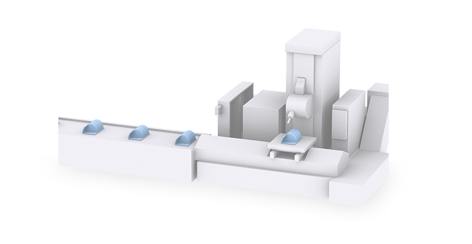
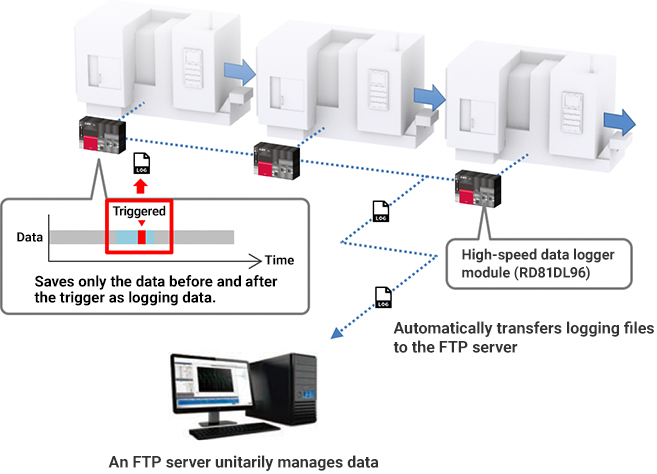
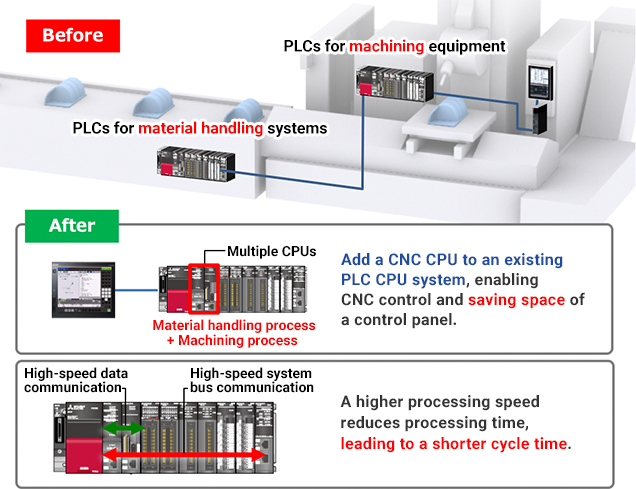
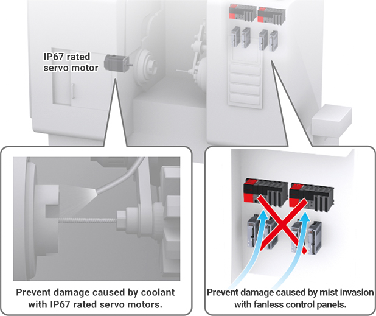

Solusi
Manufaktur Otomotif

Pemesinan Mesin
- Meningkatkan ketertelusuran untuk mengurangi cacat pemesinan
- Meningkatkan waktu siklus dan mengurangi ukuran panel kontrol melalui penghematan ruang oleh pengontrol (PLC/CNC)
- Mencegah kerusakan pada motor servo yang disebabkan oleh pendingin selama pemesinan

Solusi untuk Masalah
| Masalah | Solusi |
|---|---|
| Meningkatkan ketertelusuran untuk mengurangi cacat pemesinan | Kelola secara terpadu data yang dikumpulkan oleh modul pencatat data kecepatan tinggi. |
| Meningkatkan waktu siklus dan mengurangi ukuran panel kontrol melalui penghematan ruang oleh pengontrol (PLC/CNC) | Konfigurasikan sistem CPU ganda dengan CPU PLC dan CPU CNC. |
| Mencegah kerusakan pada motor servo yang disebabkan oleh pendingin selama pemesinan | Tingkatkan ketahanan air dengan motor servo berperingkat IP67 dan panel kontrol tanpa kipas. |
Masalah
Meningkatkan ketertelusuran untuk mengurangi cacat pemesinan
Solusi
Kumpulkan data pemesinan dengan modul pencatat data kecepatan tinggi tanpa membuat program ladder. Wujudkan ketertelusuran dengan secara otomatis mengirim data ke server FTP dan mengelolanya secara terpadu.
- Modul pencatat data kecepatan tinggi mencatat berbagai data dalam proses produksi dan mewujudkan ketertelusuran lokasi produksi dengan mengubah pengaturan tanpa menghentikan peralatan.
- CBM (Condition Based Maintenance) menemukan beban puncak dari setiap alat dari data pemesinan masa lalu dan menggunakannya untuk memprediksi jumlah penggunaan alat. Memberi tahu operator tentang prediksi jumlah penggunaan alat yang tersisa berkontribusi pada visualisasi keausan alat.
Poin
- Simpan data pencatatan dalam format file Unicode/CSV/BIN, dan buat berbagai materi seperti laporan harian, buku besar, dan laporan dalam format file Excel.
- File pencatatan dapat ditransfer secara otomatis ke komputer server.

Daftar Produk
Masalah
Meningkatkan waktu siklus dan mengurangi ukuran panel kontrol melalui penghematan ruang oleh pengontrol (PLC/CNC)
Solusi
Kurangi ukuran panel kontrol dengan memasang CPU PLC dan CPU CNC pada unit dasar yang sama, dengan memasukkan proses pemesinan ke dalam proses kontrol konveyor. Perpendek waktu siklus dengan CPU khusus CNC orisinal Mitsubishi Electric yang mengurangi waktu pemrosesan komunikasi data kecepatan tinggi.
- CPU CNC adalah CNC multi-CPU yang mendukung seri MELSEC iQ-R.
- Pemesinan akurasi tinggi dengan waktu siklus lebih pendek dicapai oleh kemampuan pemrosesan PLC tinggi, komunikasi optik lebih cepat antara CPU CNC dan drive, dan waktu pemrosesan lebih pendek antara CPU CNC dan PLC
Poin
- CPU CNC dan CPU PLC independen, memungkinkan konfigurasi sistem yang fleksibel sesuai dengan skala produksi dan aplikasi.

Daftar Produk
Masalah
Mencegah kerusakan pada motor servo yang disebabkan oleh pendingin selama pemesinan
Solusi
Gunakan motor servo berperingkat IP67 untuk mencegah kerusakan pada motor servo yang disebabkan oleh pendingin. Tingkatkan ketahanan air dengan struktur tanpa kipas pada modul kontrol yang memungkinkan panel kontrol tanpa kipas.
- Motor servo berperingkat IP67 mencegah kerusakan yang disebabkan oleh air atau debu yang masuk ke titik sambungan seperti bagian poros motor.
Poin
- Cegah kerusakan yang disebabkan oleh pendingin dengan motor servo berperingkat IP67.
- Cegah kerusakan yang disebabkan oleh masuknya kabut dengan panel kontrol tanpa kipas.
